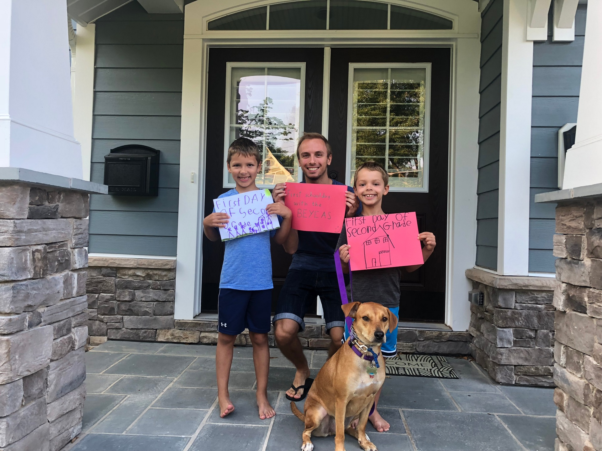

Család
 Hogyan sikerült kijutnom az USA-ba, és ennyi időt eltöltenem ott? Au pairként. Az au pair mondhatni olyan, mint egy babysitter. Ugyanúgy az a dolga, hogy vigyázzon gyerekekre, játsszon velük, tanuljon velük, etesse meg őket, stb. A különbség egy átlagos babysitterhez képest az, hogy az au pair a családdal él, tehát akkor is jelen van, amikor nem dolgozik, (ha minden jól működik) része a családnak.
Az én kinti családom nagyszerű volt, remekül illettünk egymáshoz. Egy 7 éves fiú ikerpárra vigyáztam, és nem csak velük, de a szülőkkel is remekül kijöttem. Ez azt eredményezte, hogy bármikor szívesen töltöttem velük az időt, nem léptem le azonnal találkozni a barátaimmal, amikor a munkaidőm véget ért. Maximálisan az volt az érzésem, hogy része vagyok a családnak. Egy hatalmas élmény volt számomra, és azóta is tartom velük a kapcsolatot.